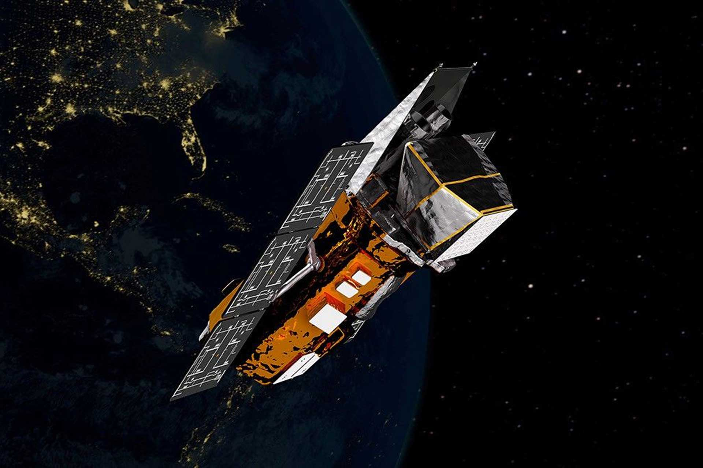

La NASA abandonne le sauvetage du télescope Swift, condamné à se désintégrer

🛒 En lien avec cet article
🛒 Voir le prix : Ordinateur portable
Publicité — Liens de partenariat Amazon : une commission peut être reversée, sans surcoût pour vous.
🔥 Top produits tech du moment
Publicité — Liens de partenariat Amazon : une commission peut être reversée, sans surcoût pour vous.
La French Tech et l'écosystème startup européen continuent d'attirer les talents et les capitaux. L'innovation française se distingue particulièrement dans certains domaines clés.
Ce qu'il faut retenir
La NASA et la start-up Katalyst Space Technologies ont annoncé l'échec de leur mission de sauvetage du télescope Swift, en orbite depuis 2004.
Une panne de propulseurs et un manque de carburant ont empêché le vaisseau LINK de capturer le télescope pour le repousser vers une orbite plus élevée.
Sans intervention, Swift devrait se désintégrer dans l'atmosphère terrestre d'ici la fin de l'année 2026.
Pourquoi c'est important
Cette information illustre le dynamisme de l'écosystème des startups et de l'innovation. Elle concerne directement les utilisateurs de technologies numériques et mérite d'être suivie de près dans les prochaines semaines. La NASA abandonne le sauvetage du télescope Swift, condamné à se désintégrer est ainsi un signal à prendre en compte pour comprendre les évolutions du secteur.
En résumé
Retenez l'essentiel : La NASA abandonne le sauvetage du télescope Swift, condamné à se désintégrer. Cette actualité a été rapportée par 01net. Nous continuerons de suivre ce sujet et de vous tenir informés des prochaines évolutions.
🚀 Vous êtes freelance tech ?
Calculez votre TJM en 30 secondes : micro-entreprise, SASU, EURL ou portage salarial. Gratuit, taux 2025.
Calculer mon TJM →Source : 01net